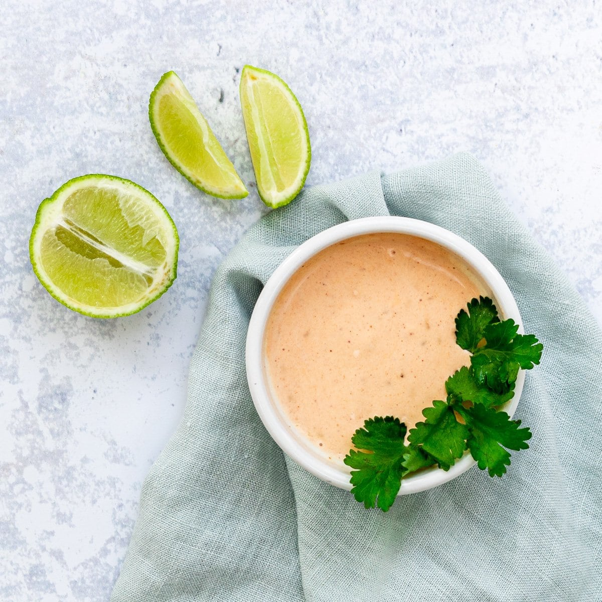

Chipotle Lime Mayo

Description: A smoky, tangy, and creamy chipotle mayo perfect for sandwiches, tacos, or as a dip.
Yield: 1 cup
Ingredients
- 1 cup mayonnaise
- 2 chipotle peppers in adobo sauce
- 1 tablespoon fresh lime juice
- 1/2 teaspoon garlic powder
- Salt to taste
Instructions
- Add all ingredients to a blender or food processor.
- Blend until smooth and creamy.
- Taste and adjust salt or lime juice as needed.
- Transfer to a jar and refrigerate until ready to use.